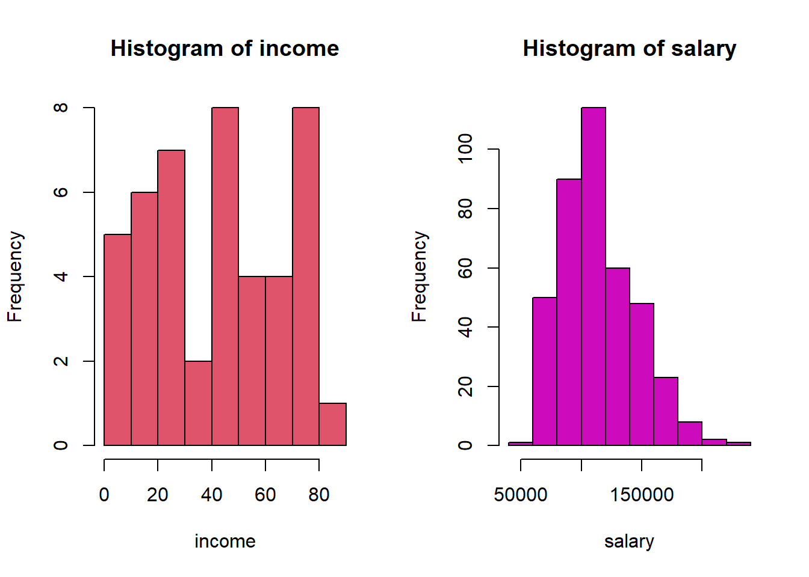

程式相關
print() 顯示資料框、向量、列表等等，但是無法附加上文字。
source() R可以讀取既有指令的檔案，在不必開啟命令稿的情況下直接執行多行程式，可節省許多篇幅以及時間。 如：
sink("twohistograms.R") #define a new script file
cat("set.seed(02138)") #input a function that sets starting number for random number
cat("\n") #end of line
cat("#write R script to a file without opening a document")
cat("\n") #end of line
cat("fnorm<-function(mu){ #create a function with a parameter: mu
sample.o<-rnorm(20,mu,1/sqrt(mu)) #define the 1st vector that generates random numbers
sample.i<-sample.o+runif(1,0,10) #define the 2nd vector that generates random numbers
par(mfrow=c(1,2)) #set parameter of graphic for 1*2 graphics
hist(sample.o, col=1, main='', #histogram with Basic R
xlab='Original sample')
hist(sample.i, col=4, main='', #another histogram
xlab='Original sample + random number')
}")
cat("\n") #end of function
sink() #save the script in the specified file
file.show("twohistograms.R") #Opening an editor to show the script
source("twohistograms.R")
fnorm(1)
with() 當環境空間有一個以上的資料框，為了避免混淆，可以使用該指令進行分析
par(mfrow=c(1,2))
library(car)
with(Duncan, hist(income, col=2))
with(Salaries, hist(salary, col=6))

- names() 顯示資料框的變數名稱
## [1] "mpg" "cyl" "disp" "hp" "drat" "wt" "qsec" "vs" "am" "gear" "carb"
which(Orange$circumference>100)
## [1] 4 5 6 7 10 11 12 13 14 18 19 20 21 24 25 26 27 28 32 33 34 35
oc<-which(Orange$circumference>100) #create a vector
#of data that meets a condition
Orange[oc,] #match data with the vector
## Tree age circumference
## 4 1 1004 115
## 5 1 1231 120
## 6 1 1372 142
## 7 1 1582 145
## 10 2 664 111
## 11 2 1004 156
## 12 2 1231 172
## 13 2 1372 203
## 14 2 1582 203
## 18 3 1004 108
## 19 3 1231 115
## 20 3 1372 139
## 21 3 1582 140
## 24 4 664 112
## 25 4 1004 167
## 26 4 1231 179
## 27 4 1372 209
## 28 4 1582 214
## 32 5 1004 125
## 33 5 1231 142
## 34 5 1372 174
## 35 5 1582 177
## [1] 3 3 3 3 3
c(rep("大", 3), rep("中", 1), rep("小",2))
## [1] "大" "大" "大" "中" "小" "小"
## [1] 1 2 3 4 5 6 7 8 9 10
## [1] 100 102 104 106 108 110
## [1] 1 2 3 4 5 6
## [1] 1 2 3 4 5 6 7 8 9 10 11
字串相關
latvija<-c("Daugavpils","Jēkabpils","Jelgava
Liepāja","Rēzekne","Rīga","Valmiera",
"Ventspils")
grep("pils", latvija)
## [1] 1 2 7
latvija[grep("pils", latvija)]
## [1] "Daugavpils" "J<U+0113>kabpils" "Ventspils"
dat<-read.csv("c:/Users/Juan/Desktop/rproject/opendata106N0101.csv", header=T, fileEncoding = "utf-8")
district<-dat[grep("區", dat$code), ]
head(dat, n=3)
## code 年底人口數 土地面積 人口密度
## 1 新北市板橋區 551480 23.1373 23835
## 2 新北市三重區 387484 16.3170 23747
## 3 新北市中和區 413590 20.1440 20532
L <- list(a<-c('lecture', 'movie'), b<-c('Movie channel'), c=c(1:10),
d<-c('movie','food', "news",'car','music'))
match.s<-grep('movie', L) ; match.s
## [1] 1 4
## [[1]]
## [1] "lecture" "movie"
##
## [[2]]
## [1] "movie" "food" "news" "car" "music"
-gsub() 取代符合條件的字串。以上述為例，假設我們想把「臺」一律改為「台」
library(dplyr)
dat2 <- dat %>%
mutate(code=gsub("臺", "台", dat$code))
dat2[grep('台北市', dat2$code), ]
## code 年底人口數 土地面積 人口密度
## 30 台北市松山區 206988 9.2878 22286
## 31 台北市信義區 225753 11.2077 20143
## 32 台北市大安區 309969 11.3614 27283
## 33 台北市中山區 230710 13.6821 16862
## 34 台北市中正區 159608 7.6071 20981
## 35 台北市大同區 129278 5.6815 22754
## 36 台北市萬華區 191850 8.8522 21673
## 37 台北市文山區 274424 31.5090 8709
## 38 台北市南港區 122155 21.8424 5593
## 39 台北市內湖區 287771 31.5787 9113
## 40 台北市士林區 288295 62.3682 4622
## 41 台北市北投區 256456 56.8216 4513
dat3 <- dat %>%
mutate(city=substr(dat$code, 1, 3))
head(dat3, n=3)
## code 年底人口數 土地面積 人口密度 city
## 1 新北市板橋區 551480 23.1373 23835 新北市
## 2 新北市三重區 387484 16.3170 23747 新北市
## 3 新北市中和區 413590 20.1440 20532 新北市
country<-c( "United States", "Republic of Kenya", "Republic of Korea")
sub('Republic of', '', country)
## [1] "United States" " Kenya" " Korea"
zodiac<-c( "(mouse)", "(ox)", "(tiger)", "(rabbit)", "(dragon)")
zodiac<-sub("\\(","", zodiac)
sub("\\)","", zodiac)
## [1] "mouse" "ox" "tiger" "rabbit" "dragon"
country<-c("People's Republic of China
Democratic Republic of Congo",
"United States",
"Republic of Kenya", "Republic of Korea",
"Democratic People's Republic of Korea")
country[grep('^Republic of', country)]
## [1] "Republic of Kenya" "Republic of Korea"
gsub("^Republic of", "", country) #`^` means from the start ;`$` from the end
## [1] "People's Republic of China\n Democratic Republic of Congo"
## [2] "United States"
## [3] " Kenya"
## [4] " Korea"
## [5] "Democratic People's Republic of Korea"
document <- c("When in the Course of human events, it becomes necessary for one people to dissolve the political bands which have connected them with another, and to assume among the powers of the earth, the separate and equal station to which the Laws of Nature and of Nature's God entitle them, a decent respect to the opinions of mankind requires that they should declare the causes which impel them to the separation. We hold these truths to be self-evident, that all men are created equal, that they are endowed by their Creator with certain unalienable Rights, that among these are Life, Liberty and the pursuit of Happiness.--That to secure these rights, Governments are instituted among Men, deriving their just powers from the consent of the governed, --That whenever any Form of Government becomes destructive of these ends, it is the Right of the People to alter or to abolish it, and to institute new Government, laying its foundation on such principles and organizing its powers in such form, as to them shall seem most likely to effect their Safety and Happiness. Prudence, indeed, will dictate that Governments long established should not be changed for light and transient causes; and accordingly all experience hath shewn, that mankind are more disposed to suffer, while evils are sufferable, than to right themselves by abolishing the forms to which they are accustomed. But when a long train of abuses and usurpations, pursuing invariably the same Object evinces a design to reduce them under absolute Despotism, it is their right, it is their duty, to throw off such Government, and to provide new Guards for their future security.--Such has been the patient sufferance of these Colonies; and such is now the necessity which constrains them to alter their former Systems of Government. The history of the present King of Great Britain is a history of repeated injuries and usurpations, all having in direct object the establishment of an absolute Tyranny over these States. To prove this, let Facts be submitted to a candid world. He has refused his Assent to Laws, the most wholesome and necessary for the public good. He has forbidden his Governors to pass Laws of immediate and pressing importance, unless suspended in their operation till his Assent should be obtained; and when so suspended, he has utterly neglected to attend to them. He has refused to pass other Laws for the accommodation of large districts of people, unless those people would relinquish the right of Representation in the Legislature, a right inestimable to them and formidable to tyrants only. He has called together legislative bodies at places unusual, uncomfortable, and distant from the depository of their public Records, for the sole purpose of fatiguing them into compliance with his measures. He has dissolved Representative Houses repeatedly, for opposing with manly firmness his invasions on the rights of the people. He has refused for a long time, after such dissolutions, to cause others to be elected; whereby the Legislative powers, incapable of Annihilation, have returned to the People at large for their exercise; the State remaining in the mean time exposed to all the dangers of invasion from without, and convulsions within. He has endeavoured to prevent the population of these States; for that purpose obstructing the Laws for Naturalization of Foreigners; refusing to pass others to encourage their migrations hither, and raising the conditions of new Appropriations of Lands. He has obstructed the Administration of Justice, by refusing his Assent to Laws for establishing Judiciary powers. He has made Judges dependent on his Will alone, for the tenure of their offices, and the amount and payment of their salaries. He has erected a multitude of New Offices, and sent hither swarms of Officers to harrass our people, and eat out their substance. He has kept among us, in times of peace, Standing Armies without the Consent of our legislatures. He has affected to render the Military independent of and superior to the Civil power. He has combined with others to subject us to a jurisdiction foreign to our constitution, and unacknowledged by our laws; giving his Assent to their Acts of pretended Legislation: For Quartering large bodies of armed troops among us: For protecting them, by a mock Trial, from punishment for any Murders which they should commit on the Inhabitants of these States: For cutting off our Trade with all parts of the world: For imposing Taxes on us without our Consent: For depriving us in many cases, of the benefits of Trial by Jury: For transporting us beyond Seas to be tried for pretended offences. For abolishing the free System of English Laws in a neighbouring Province, establishing therein an Arbitrary government, and enlarging its Boundaries so as to render it at once an example and fit instrument for introducing the same absolute rule into these Colonies: For taking away our Charters, abolishing our most valuable Laws, and altering fundamentally the Forms of our Governments: For suspending our own Legislatures, and declaring themselves invested with power to legislate for us in all cases whatsoever. He has abdicated Government here, by declaring us out of his Protection and waging War against us. He has plundered our seas, ravaged our Coasts, burnt our towns, and destroyed the lives of our people. He is at this time transporting large Armies of foreign Mercenaries to compleat the works of death, desolation and tyranny, already begun with circumstances of Cruelty & perfidy scarcely paralleled in the most barbarous ages, and totally unworthy the Head of a civilized nation. He has constrained our fellow Citizens taken Captive on the high Seas to bear Arms against their Country, to become the executioners of their friends and Brethren, or to fall themselves by their Hands. He has excited domestic insurrections amongst us, and has endeavoured to bring on the inhabitants of our frontiers, the merciless Indian Savages, whose known rule of warfare, is an undistinguished destruction of all ages, sexes and conditions. In every stage of these Oppressions We have Petitioned for Redress in the most humble terms: Our repeated Petitions have been answered only by repeated injury. A Prince whose character is thus marked by every act which may define a Tyrant, is unfit to be the ruler of a free people. Nor have We been wanting in attentions to our Brittish brethren. We have warned them from time to time of attempts by their legislature to extend an unwarrantable jurisdiction over us. We have reminded them of the circumstances of our emigration and settlement here. We have appealed to their native justice and magnanimity, and we have conjured them by the ties of our common kindred to disavow these usurpations, which, would inevitably interrupt our connections and correspondence. They too have been deaf to the voice of justice and of consanguinity. We must, therefore, acquiesce in the necessity, which denounces our Separation, and hold them, as we hold the rest of mankind, Enemies in War, in Peace Friends. We, therefore, the Representatives of the united States of America, in General Congress, Assembled, appealing to the Supreme Judge of the world for the rectitude of our intentions, do, in the Name, and by Authority of the good People of these Colonies, solemnly publish and declare, That these United Colonies are, and of Right ought to be Free and Independent States; that they are Absolved from all Allegiance to the British Crown,
")
doc <- c("and that all political connection between them and the State of Great Britain, is and ought to be totally dissolved; and that as Free and Independent States, they have full Power to levy War, conclude Peace, contract Alliances, establish Commerce, and to do all other Acts and Things which Independent States may of right do. And for the support of this Declaration, with a firm reliance on the protection of divine Providence, we mutually pledge to each other our Lives, our Fortunes and our sacred Honor.")
tmp <- strsplit(c(document,doc), split=" ")
tmp %>%
unlist() %>%
as_tibble() %>%
count(value) %>%
arrange(desc(n))
## # A tibble: 633 x 2
## value n
## <chr> <int>
## 1 of 76
## 2 the 75
## 3 to 64
## 4 and 55
## 5 our 25
## 6 for 20
## 7 has 20
## 8 their 20
## 9 He 18
## 10 in 18
## # ... with 623 more rows